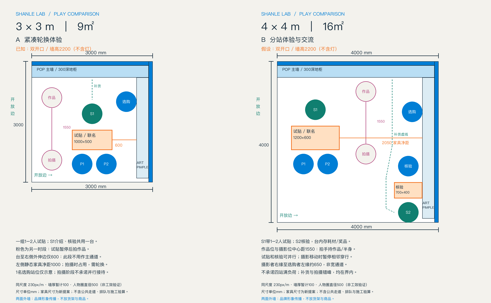
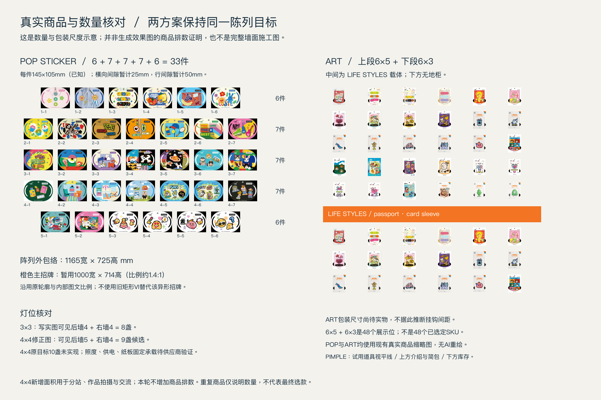
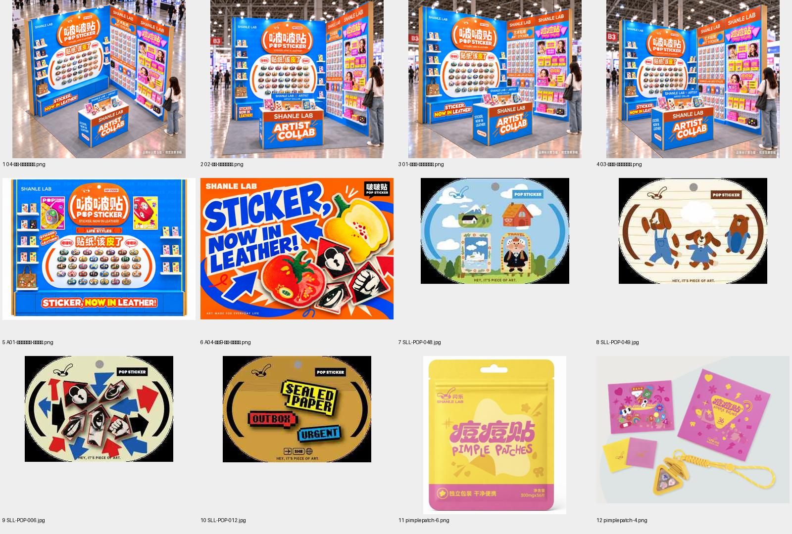

SHANLE LAB / SPACE FOR PLAY / 2026.10.30 · v01
3×3紧凑轮换
4×4分站体验与交流
同一品牌与陈列目标，两种接待方式。新增7㎡优先留给试贴、作品展示与工作人员交流。
4×4的相邻双开口、L形墙及2200mm墙高均为比较假设。4×2已退出候选。图为玩法与空间提案，尚非施工、印刷或活动权益定稿。
先看使用场景
写实图中的商品与招牌为AI重绘：POP首排数量、ART排数未通过目标核对，4×4招牌偏宽。仅用于场景比较；精确数量见真实商品核对稿。
同尺度平面：230px/m

单张3×3平面 · 单张4×4平面 · 坐标与尺寸数据
真实商品与数量约束

本轮是供选择的空间与玩法提案，不是施工、印刷或活动权益定稿。4×2退出候选，历史文件未修改。已完整阅读20261030交接文件，检查v10四视图、v13内墙、v16双外墙、真实商品catalog及PIMPLE VI；参考索引见assets/source-index.txt。本次没有邮件、跨会话回传或设备传输。
共同前提
3×3占地3000×3000；已知墙高2200mm不含灯，相邻双开放。4×4占地4000×4000；其相邻双开放、L墙、2200mm墙高均为比较假设，须以实际场地复核。两图暂按100mm墙厚计入占地，不是供应商实测。后墙柜体从内墙面向内伸300mm；右墙层板/载体暂按最大300mm包络，无ART/PIMPLE下地柜。手机层板120mm深待实物复核。所有台体均为直线矩形纸板道具，承载、配重、布线与消防由供应商及场地核定。
从已有设计保留的经验
POP STICKER是品牌入口，ART/LIFE STYLES与PIMPLE展开品牌；包、手机、卡套只是应用载体。联名应能读懂“创作者—作品—商品—体验”的关系，名称、作品说明、授权素材待真实项目提供，本稿不编造艺术家或授权。两面外墙都是品牌形象，不设外侧货架；保留v16蓝/橙互补、真实贴纸为主角的方向供后续细化，并非本轮重新完成所有外立面。
空地要落实为工作人员介绍、试贴动作、摄影距离、核验与转身；纸板家具只挪位置无法自动解决拥堵。对比以同一230px/m绘制，不能通过效果图透视推断实际净宽。
两种运营方式
| 项目 | 3×3 紧凑轮换 | 4×4 分站交流 |
|---|
| 主要体验 | 一组1–2人短时试贴，随后同台核验 | 一组1–2人试贴；另一人可到独立核验台 |
| 联名叙事 | 台上用真实作品/试贴样片，介绍牌朝工作人员与观众 | 试贴台讲作品，后墙增作品说明/拍摄背景；不靠增加货量 |
| 试贴台 | 1000×500mm，高900mm提案，位置x1000 y1700 | 1200×600mm，高900mm提案，位置x350 y1600 |
| 工作人员 | S1在台后介绍；核验和试贴分时 | S1带体验，S2在前右核验台面向展位内部；可同时交流 |
| 核验与储物 | 同台分时；台内耗材/奖品分隔，上方保持操作面 | 独立700×400mm核验台，高900mm提案，x2900 y3000；台内分格 |
| 摄影 | 左侧粉色站位是另一时段；试贴/补货暂停，不能叠加计算人数 | 后墙作品位与中间摄影位中心距1550mm；适合手持作品/半身，非全身大片保证 |
| 正常选购 | 一个选购站位示意；拍照阶段不承诺选购并行 | 可选购但摄影移动仍有交叉；视线外移动需工作人员协调 |
| 通行 | 台右仅600mm不用作主路；左侧家具间1000mm，拍摄时占用 | 台右家具间2050mm；扣除摄影/选购站位后局部仅650mm，不能当宽通道 |
| 入口 | 左/前双开；拍照时做现场短时轮换 | 左侧接近体验，前侧接近核验；不引导场外排队 |
| 补货 | 后墙柜到S1的绿色虚线，避开试贴与拍摄时段 | 后墙柜经右中部绿色虚线至S2；拍摄/选购停顿后补货，不是全天独立物流线 |
| 商品量 | POP33展示位；ART上30、下18；PIMPLE分层 | 保持同样陈列目标，新面积优先投入交流与动作 |
| 资源差异 | 一名工作人员是本提案的运行前提 | 两名工作人员才支持试贴与核验并行；若只有一名，应回到分时运行 |
| 冲突处理 | 体验→核验→拍作品，按组轮换，不把所有圆圈算成同时容量 | 试贴和核验可并行；摄影与补货/穿行错峰，不承诺四站满负荷 |
坐标均以平面左后角为原点，x向右、y向前，单位mm。人物直径500的圆仅帮助检查站位和冲突，并非人体工效、无障碍或疏散验收。图中前边/左边外没有观众容量。
可选玩法：认识联名作品与选图 → 在确认适用的样片/载体上试贴 → 展示自己的组合 → 若活动实际设有奖励，再由工作人员核验。具体步骤、时长、权益待运营定义；没有关注账号、购买门槛或免费赠送的承诺。
真实商品数量与生成图检查
merchandise-check.png由原始商品缩略图确定性排版，manifest记录81个位置的来源和SHA-256。POP为6/7/7/7/6，共33件，145×105mm；横向25、行间50只是间隙提案，阵列外包络1165×725mm。ART为上6×5=30、下6×3=18，重复图仅作展示位计数，不代表已定48个SKU。ART包装/挂钩及LIFESTYLES载体需实物核排。核对图不是写实图已通过排数校验的证据。
| 检查项 | 3×3写实图 | 4×4写实修正图 |
|---|
| 台与人员 | 1台、1工作人员、2体验者、1选购者可见；摄像位未叠加 | 2台、2工作人员、2体验者、1核验、2摄影、1选购可见 |
| 灯数 | 后4+右4=8，符合本轮目标 | 原稿后6+右4=10；修正实际后5+右4=9，未达到提示词5+5目标，作为9灯候选保留 |
| 招牌 | 外观约1.4:1接近目标，内部文字仍是生成重绘 | 外观约1.6:1，偏宽；须由真实异形招牌等比贴图替换，不能用于印刷 |
| POP排数 | 首排可见7件而目标为6；其余部分遮挡，总数未通过 | 首排也可见7件而目标为6；总数未通过 |
| ART | 上段可见6×5，下段仅2排可辨，不满足下3排目标 | 上段可见6×4，少一排；下段有人员遮挡，未通过完整计数 |
| 空间比例 | 只能检查动作关系；不能据像素证明墙高或家具位置 | 人物均在视觉地毯内；坐标、墙高、通道仍以平面提案为依据 |
| 工艺 | 呈现直线纸板/层板语言，非纸板强度证明 | 同左，9灯照度与安装也未验算 |
因此：写实图已用于比较场景与交流方式，未作为实尺寸、真实商品精确复用或正式生产验收；陈列落位以带真实原图的数量核对稿继续约束。供应商深化时须将真实产品与原招牌绑定到几何模型后再核验，而非照生成图生产。
文件与状态
plan-3x3.png、plan-4x4.png及plans-comparison.png为两张同尺度平面；layout.json为尺寸/站位数据，src保存绘制源代码。render-3x3-v01.png及render-4x4-v02-light-review.png为当前写实比较图；render-4x4-v01.png保留初稿。prompts.json保存内置image_gen生成提示词。index.html可离线打开，包含图、完整对照与限制。
已完成这一轮可查看的比较提案；4×4场地边界、最终方案偏好、实际活动权益、供应商结构与完整图面生产仍未确认。
本地页面的相对链接与图片均已检查存在，HTTP读取成功；自动浏览器访问主机不可用，尚未完成真实浏览器页面检查。图片已逐张查看。
已检查的历史图源

来源索引保留在原项目中